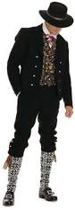
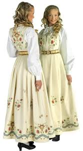

Национальный костюм Национальный костюм Норвегии называется «бюнад». Этот костюм очень популярен в Норвегии. Его надевают в праздничные дни как женщины, так и мужчины всех слоев общества. В них наряжаются не только рядовые граждане, но и члены королевской семьи. Слово bunad в Норвегии появилось в начале 20-х годов и появилось оно от старонорвежского слова «buna?r». Этим словом обозначался народный костюм, или домашнее платье. В Норвегии существует огромное количество бюнадов. Мужской бюнад включает в себя брюки до колен, чулки, рубашку, жилет, жакет и шляпу. Мужские бюнады, так же как и женские украшены вышивкой и драгоценностями . в основном, серебром. Норвежцы считают, что серебро защищает от злых духов. В полный комплект женского бюнада входят блуза с вышивкой, жилет, жакет, юбка, чулки, сумочка. Для зимнего варианта бюнада предназначена шаль и варежки, Обязательны украшения из серебра или золота - застежки, пуговицы, броши, серьги, запонки, кольца, пояса и особые туфли.
Самое красивое в бюнаде –это вышивка, которой норвежцы по праву гордятся. Вышивают не только рубашки и блузки, но даже чулки, перчатки и мужские брюки. Типов вышивки очень много. Это и черная вышивка для траурных мероприятий, цветная мережка для праздников, вышивание крестиком т.д. Платки могут даже иметь две разные стороны по цвету – одна сторона черная с вышитой белой розой –символом траура, а другая сторона с праздничной вышивкой. Особо стоит отметить восхитительный бюнад для невесты, главным элементом которого стала корона. В современное время бюнад стал символом Норвегии